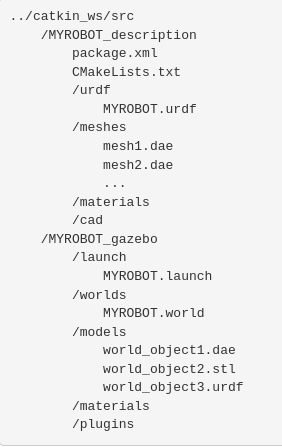
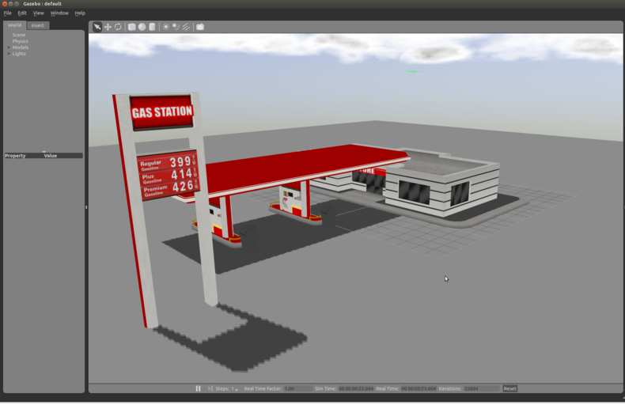
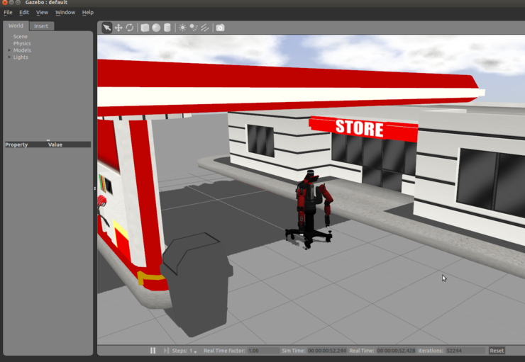
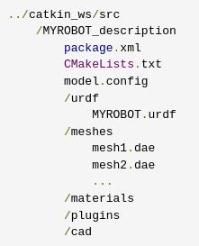

roslaunch запускает ноды, определённые в launch-файле. Синтаксис:
roslaunch [package] [filename.launch]
файл.launch находится в папке launch, она находится в каталоге пакета.
ПРИМЕЧАНИЕ: Каталог, в котором хранятся файлы launch, необязательно должен называться launch. На самом деле вам даже не нужно сохранять их в каталоге. Команда roslaunch автоматически просматривает переданный пакет и обнаруживает доступные файлы запуска. Однако это считается хорошей практикой.
<launch> <node pkg="test_package" type="topic_publisher.py" name="topic_publisher1"/> <node pkg="test_package" type="topic_subscriber" name="topic_subscriber1"/> <node pkg="test_package" type="topic_publisher.py" name="topic_publisher2"/> <node pkg="test_package" type="topic_subscriber" name="topic_subscriber2"/> </launch>Тег <launch> - первый обязательный тег. Указывает, что файл launch. </launch> - обязательный и самый последний тег.
В теге node указываем какой файл нужно запускать. Его параметры:
roslaunch name_package file.launchЕсли добавить параметр --screen, информация о работе запущенных программ будет отображенна на экране текущего терминала:
roslaunch name_package file.launch --screenФайл можно запустить без указания названия пакета, указав полный путь к файлу:
roslaunch /home/user/catkin_ws/src/test_package/launch/demo.launchВ результате выполнения команды будет запущен ros master и ноды. Список запущенных нод будет указан во время выполнения команды под пунктом Nodes. Можно также их список просмотреть командой: rosnode list
Чтобы решить данную проблему, мы можем использовать возможность передавать конфигурационные переменные в запускаемые программы через .launch файлы. Пример:
<launch>
<node pkg="test_package" type="test_params.py" name="test_params" output="log" respawn="true">
<param name="port" value="/dev/ttyS0"/>
<param name="boud" value="57600"/>
</node>
</launch>
Мы видим что в ветке node добавились элементы param с настройками. Открывая такой файл, сразу видно, какие параметры возможно конфигурировать и их значения по умолчанию.
Для того, чтобы исполняемый файлы смогли обрабатывать эти параметры, необходимо добавить для них специальный код. Это не сложно, и для python может выглядеть так:
#!/usr/bin/env python
# -*- coding: utf-8 -*-
import rospy
rospy.init_node('test_params')
r = rospy.Rate(10) # 10hz
port = rospy.get_param('~port','/dev/ttyS0')
while not rospy.is_shutdown():
print(port)
r.sleep()
Вторым параметром в функции get_param указывается значение по умолчанию, если параметр не определен в .launch файле.
Параметры возможно передавать при запуске через rosrun:
rosrun test_package test_params.py _port:=/dev/ttyS1Еще одна удобная практика для работы с параметрами, это перенос настроек в начала файла, перечислив их как аргументы. Это можно сделать используя элемент arg а далее обращение к этим аргумента в формате $(arg env_name):
<launch>
<arg name="device" default="/dev/ttyS0"/>
<arg name="boud" default="57600"/>
<node pkg="test_package" type="test_params.py" name="test_package" output="log" respawn="true">
<param name="port" value="$(arg device)"/>
<param name="boud" value="$(arg boud)"/>
</node>
</launch>
Эта практика позволяет не листать большие файлы и всегда иметь перед глазами самые важные настройки.
ros_glob_param: Hi, I am global =)
rosdistro: 'melodic'
roslaunch:
uris: {host_user_vb__38669: 'http://user-vb:38669/'}
run_id: 1b078410-b789-11e8-91b9-0800278832b1
sample_ns:
params_study: {ros_priv_param: 'Hi, I am private =)'}
ros_loc_param: Hi, I am local =)
Приведем пример:
<launch>
<include file="$(find test_package)/launch/test_params.launch">
<arg name="device" value="/dev/ttyS1"/>
</include>
<include file="$(find navibro)/camera/camerav1_640x480.launch"/>
<include file="$(find navibro)/launch/aruco_detect.launch"/>
<include file="$(find navibro)/launch/fiducial_slam.launch"/>
</launch>
В этом примере, мы подключаем файл test_params.launch , который находиться в нашем пакете и настраиваем его на работу через устройство /dev/ttyS1.. А также подключаем три других .launch файла из другого пакета.
Приведем несколько примеров:
<launch>
<arg name="have_serial" value="true"/>
<group if="$(arg have_serial)">
<!-- Блок выполниться только если have_serial установлено в true -->
<node pkg="test_package" type="test_params.py" name="test_package" output="log" respawn="true">
</group>
<!-- Также if можно использовать для одного тега-->
<include if="$(arg have_serial)" file="$(find test_package)/launch/test_params.launch">
<arg name="device" value="/dev/ttyS1"/>
</include>
</launch>
Атрибут unless работает противоположно атрибуту if. Если значение 0 то блок выполняется.roslaunch gazebo_ros empty_world.launchroslaunch Arguments
Пример команды roslaunch
Обычно значения по умолчанию для этих аргументов - это все, что вам нужно, но просто в качестве примера:
roslaunch gazebo_ros empty_world.launch / paused:=true use_sim_time:=false gui:=true throttled:=false recording:=false debug:=true verbose:=true gui_required:=true
roslaunch gazebo_ros willowgarage_world.launch roslaunch gazebo_ros mud_world.launch roslaunch gazebo_ros shapes_world.launch roslaunch gazebo_ros rubble_world.launchВ mud_world.launch запускается простой суставный механизм. Код:
<launch>
<!-- We resume the logic in empty_world.launch, changing only the name of the world to be launched -->
<include file="$(find gazebo_ros)/launch/empty_world.launch">
<arg name="world_name" value="worlds/mud.world"/> <!-- Note: the world_name is with respect to GAZEBO_RESOURCE_PATH environmental variable -->
<arg name="paused" value="false"/>
<arg name="use_sim_time" value="true"/>
<arg name="gui" value="true"/>
<arg name="recording" value="false"/>
<arg name="debug" value="false"/>
</include>
</launch>
В этом файле запуска мы наследуем большую часть необходимой функциональности от empty_world.запуск. Единственный параметр, который нам нужно изменить, - это параметр world_name, заменив пустой файл .world на файл mud.world. Для остальных аргументов просто устанавливаются значения по умолчанию.
<sdf version="1.4">
<world name="default">
<include>
<uri>model://sun</uri>
</include>
<include>
<uri>model://ground_plane</uri>
</include>
<include>
<uri>model://double_pendulum_with_base</uri>
<name>pendulum_thick_mud</name>
<pose>-2.0 0 0 0 0 0</pose>
</include>
...
</world>
</sdf>
В этом фрагменте файла world вы можете видеть ссылки на три модели. Поиск этих трех моделей осуществляется в вашей локальной базе данных моделей Gazebo. Если они там не найдены, они автоматически извлекаются из онлайн-базы данных Gazebo.
Вы можете узнать больше о файлах world в руководстве по созданию World.
Поиск Файлов World На Вашем Компьютере
Файлы World находятся в каталоге /worlds, указанном в вашем пути к ресурсам Gazebo. Расположение этого пути зависит от способа установки Gazebo и типа используемой вами системы. Чтобы найти расположение ресурсов Gazebo, используйте следующую команду:
env | grep GAZEBO_RESOURCE_PATHТипичным путем может быть что-то вроде /usr/local/share/gazebo-1.9. Добавьте /worlds в конец пути, и у вас должен получиться каталог, содержащий файлы world, которые использует Gazebo, включая mud.файл world.
На данный момент мы предполагаем, что ваше рабочее пространство catkin называется catkin_ws, хотя вы можете назвать его как угодно. Таким образом, ваше рабочее пространство catkin может располагаться на вашем компьютере примерно по следующему адресу:
/home/user/catkin_ws/srcВсе, что касается модели и описания вашего робота, находится, согласно стандартам ROS, в пакете с именем /MYROBOT_description, а все файлы world и файлы запуска, используемые в Gazebo, находятся в пакете ROS с именем /MYROBOT_gazebo. Замените "MYROBOT" на название вашего бота строчными буквами. С этими двумя пакетами ваша иерархия должна быть следующей:

Помните, что команда catkin_create_pkg используется для создания новых пакетов, хотя при необходимости ее можно легко адаптировать и для rosbuild. Большинство этих папок и файлов должны быть понятны сами по себе.
В следующем разделе мы расскажем вам о том, как выполнить некоторые из этих настроек для использования с пользовательским файлом world.
<launch>
<!-- We resume the logic in empty_world.launch, changing only the name of the world to be launched -->
<include file="$(find gazebo_ros)/launch/empty_world.launch">
<arg name="world_name" value="$(find MYROBOT_gazebo)/worlds/MYROBOT.world"/>
<!-- more default parameters can be changed here -->
</include>
</launch>
<?xml version="1.0" ?>
<sdf version="1.4">
<world name="default">
<include>
<uri>model://ground_plane</uri>
</include>
<include>
<uri>model://sun</uri>
</include>
<include>
<uri>model://gas_station</uri>
<name>gas_station</name>
<pose>-2.0 7.0 0 0 0 0</pose>
</include>
</world>
</sdf>
. ~/catkin_ws/devel/setup.bash roslaunch MYROBOT_gazebo MYROBOT.launchВы должны увидеть следующую модель мира (уменьшите масштаб с помощью колесика прокрутки мыши).:

До конца урока ваш пустой мир MYROBOT_gazebo должен быть запущен.
Редактирование файла World в Gazebo
Вы можете вставить дополнительные модели в файл мира вашего робота и использовать команду File->Save , чтобы экспортировать отредактированный мир обратно в ваш пакет ROS.
ROS Service Call Spawn Method
Первый метод обеспечивает большую переносимость пакетов ROS вашего робота между компьютерами и репозиториями. Он позволяет сохранять местоположение вашего робота относительно пути к пакету ROS, но также требует, чтобы вы выполняли вызов службы ROS с помощью небольшого скрипта (на python).
Model Database Method
Второй способ позволяет вам включить вашего робота в файл .world, что кажется более простым и удобным, но требует, чтобы вы добавили своего робота в базу данных моделей Gazebo, установив переменную окружения.
Мы рассмотрим оба метода. В целом, мы рекомендуем использовать метод запуска вызова службы ROS
rosrun gazebo_ros spawn_model -file `rospack find MYROBOT_description`/urdf/MYROBOT.urdf -urdf -x 0 -y 0 -z 1 -model MYROBOTЧтобы просмотреть все доступные аргументы для spawn_model, включая пространства имен, свойства trimesh, положения соединений и ориентацию RPY, запустите:
rosrun gazebo_ros spawn_model -h
URDF Example with Baxter
Если у вас еще нет URDF для тестирования, в качестве примера вы можете загрузить пакет baxter_description из репозитория Rethink Robotics baxter_common. Поместите этот пакет в свою рабочую область catkin, выполнив:
git clone https://github.com/RethinkRobotics/baxter_common.gitТеперь у вас должен быть URDF-файл с именем baxter.urdf, расположенный в baxter_description/urdf/, и вы можете запустить:
rosrun gazebo_ros spawn_model -file `rospack find baxter_description`/urdf/baxter.urdf -urdf -z 1 -model baxterвы должны увидеть что-то похожее на:

Чтобы интегрировать это непосредственно в файл запуска ROS, снова откройте файл MYROBOT_gazebo/launch/YOUROBOT.launch и добавьте следующее перед </launch>
<!-- Spawn a robot into Gazebo --> <node name="spawn_urdf" pkg="gazebo_ros" type="spawn_model" args="-file $(find baxter_description)/urdf/baxter.urdf -urdf -z 1 -model baxter" />Запустив этот файл, вы должны увидеть те же результаты, что и при использовании rosrun.
XACRO Example with PR2
Если ваш URDF не в формате XML, а в формате XACRO, вы можете внести аналогичные изменения в свой файл запуска. Вы можете запустить этот пример PR2, установив этот пакет:
sudo apt-get install ros-jade-pr2-commonЗатем добавьте это в свой файл запуска, созданный ранее в этом руководстве:
<!-- Convert an xacro and put on parameter server --> <param name="robot_description" command="$(find xacro)/xacro.py $(find pr2_description)/robots/pr2.urdf.xacro" /> <!-- Spawn a robot into Gazebo --> <node name="spawn_urdf" pkg="gazebo_ros" type="spawn_model" args="-param robot_description -urdf -model pr2" />Запустив этот файл, вы должны увидеть PR2 на заправочной станции.
Чтобы реализовать этот метод, вы должны создать новую базу данных моделей, содержащую только одного вашего робота. Это не самый простой способ загрузить ваш URDF в Gazebo, но он позволяет избежать необходимости хранить две копии URDF вашего робота на вашем компьютере. Если приведенные ниже инструкции вас смущают, обратитесь к документации по базе данных моделей Gazebo, чтобы понять, почему требуются эти шаги.
Мы предполагаем, что ваша файловая иерархия ROS workspace настроена так, как описано в предыдущих разделах. Единственное отличие заключается в том, что теперь файл model.config добавлен в ваш пакет MYROBOT_description следующим образом:

Эта иерархия специально адаптирована для использования в качестве базы данных моделей Gazebo с помощью следующих папок/файлов:
model.config
У каждой модели должен быть файл model.config в корневом каталоге модели, содержащий метаинформацию о модели. В общем, скопируйте это в файл model.config, заменив MYROBOT.urdf на свое имя файла:
<?xml version="1.0"?>
<model>
<name>MYROBOT</name>
<version>1.0</version>
<sdf>urdf/MYROBOT.urdf</sdf>
<author>
<name>My name</name>
<email>name@email.address</email>
</author>
<description>
A description of the model
</description>
</model>
В отличие от SDFs, в URDFs, тег <version> не требуется. Дополнительную информацию смотрите в документации по базе данных Gazebo Model.
Environment Variable
Наконец, вам нужно добавить переменную среды в ваш файл .bashrc, которая указывает Gazebo, где искать базы данных моделей. Используя выбранный вами редактор, отредактируйте "~/.bashrc". Проверьте, определен ли у вас уже путь к GAZEBO_MODEL_PATH. Если он у вас уже есть, добавьте его, используя точку с запятой, в противном случае добавьте новый экспорт. Предполагая, что ваша рабочая область Catkin находится в ~/catkin_ws/, ваш путь должен выглядеть примерно так:
export GAZEBO_MODEL_PATH=/home/user/catkin_ws/src/
Просмотр в Gazebo - Вручную
Теперь проверьте, правильно ли настроена ваша новая база данных моделей Gazebo, запустив Gazebo:
gazeboИ нажмите на вкладку "Insert" слева. Вероятно, вы увидите несколько различных выпадающих списков, представляющих различные базы данных моделей, доступные в вашей системе, включая онлайн-базу данных. Найдите базу данных, соответствующую вашему роботу, откройте подменю, нажмите на название вашего робота, а затем с помощью мыши выберите место в Gazebo для размещения робота
Просмотр в gazebo - запуск roslaunch с базой данных моделей
Преимущество метода model database заключается в том, что теперь вы можете включить своего робота непосредственно в свои файлы world, не используя путь к пакету ROS. Мы будем использовать ту же настройку, что и в разделе "Создание файла world", но изменим файл world.
В той же папке MYROBOT_description/launch отредактируйте файл MYROBOT.world следующего содержания:
<?xml version="1.0" ?>
<sdf version="1.4">
<world name="default">
<include>
<uri>model://ground_plane</uri>
</include>
<include>
<uri>model://sun</uri>
</include>
<include>
<uri>model://gas_station</uri>
<name>gas_station</name>
<pose>-2.0 7.0 0 0 0 0</pose>
</include>
<include>
<uri>model://MYROBOT_description</uri>
</include>
</world>
</sdf>
Теперь вы сможете запустить свой пользовательский мир как с заправочной станцией, так и с роботом в Gazebo, используя следующую команду:
roslaunch MYROBOT_gazebo MYROBOT.launchНедостатком этого метода является то, что ваши пакеты MYROBOT_description и MYROBOT_gazebo не так легко переносятся между компьютерами - вам сначала нужно установить GAZEBO_MODEL_PATH в любой новой системе, прежде чем вы сможете использовать эти пакеты ROS.
<run_depend>gazebo_ros</run_depend>
<export>
<gazebo_ros gazebo_model_path="${prefix}/models"/>
<gazebo_ros gazebo_media_path="${prefix}/models"/>
</export>
"${префикс}" - это то, о чем новые пользователи тоже могут не сразу узнать, и это необходимо здесь.
Также было бы полезно получить некоторую информацию о том, как отладить эти пути со стороны ROS, например, что вы можете использовать плагины rospack --attrib="gazebo_media_path" gazebo_ros, чтобы проверить путь к мультимедиа, который будет выбран gazebo.